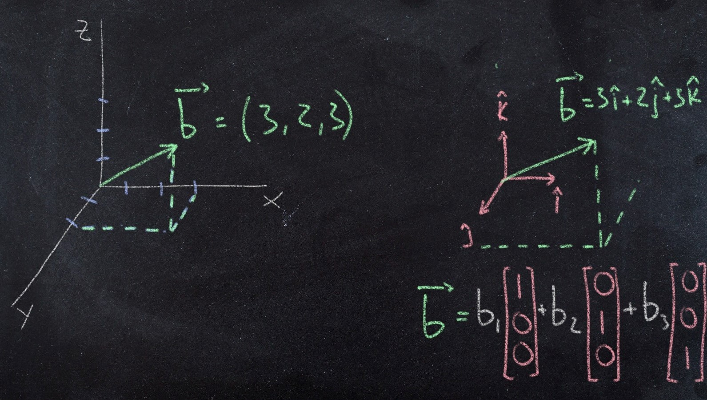
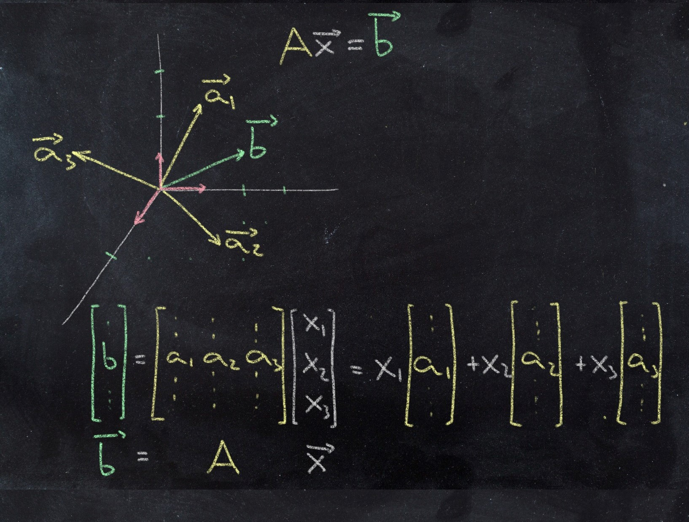

Representing a point in the \(xy\) plane or in space is quite intuitive: we measure a distance along each of the axes and trace dashed lines parallel to them to find it. When learning linear algebra the idea of a vector space may seem more abstract, but if we think in terms of the natural basis vectors (\( \mathbf{\hat{i}}, \mathbf{\hat{j}}, \mathbf{\hat{k}} \)) the picture is very similar: just stretch each vector as as far as needed, again trace dashed lines parallel to the vectors and join them at the coordinate of the point (Figure 1). Seems like a trivial change, and it is, but it helps illustrate what a matrix-encoded linear system is describing.
 Figure 1 Representation of a coordinate/vector in cartersian space and in a space defined by standard basis vectors
The column space of a matrix \(C(A) \) is defined as all linear combinations of the columns of a matrix (Strang), that is \(A \mathbf{x} \) and it follows the same logic, so if we want to represent a vector \(\mathbf{b} \), what we need to do is stretch the columns of the matrix by some coefficients \( x_i \) and that will be its representation. That is not as intuitive as using the standard basis, that is why it requires solving the system by elimination (or other equivalent method, like finding the inverse) to determined what the coordinates \( \) are, but the principle is the same.
 Figure 2 Representation of matrix columns as vectors in space and vector \(\mathbf{b} = A \mathbf{x} \)
So a good way of visualizing the column space is thinking first of the columns of the matrix as vectors in the space, and then thinking what subspace these columns describe, or how (or if) they can combine to form \( \mathbf{b} \) (or not, if it happens not to be inside the column space, i.e. \( A \mathbf{x} = \mathbf{b} \) does not have a solution).
-- caetano,
September 29, 2020